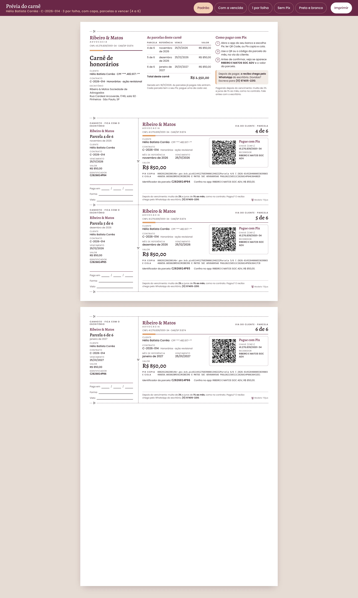
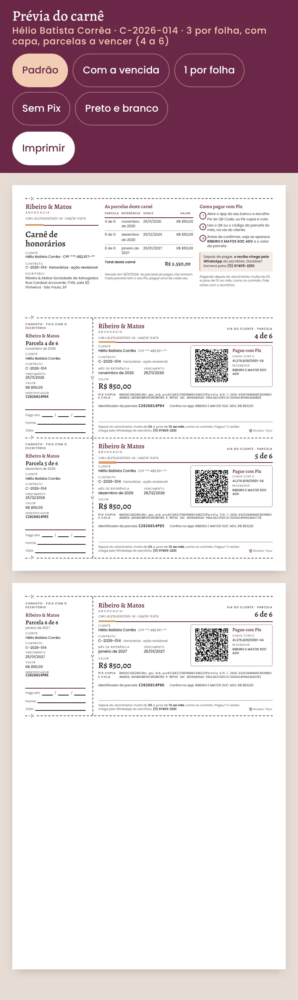

Padrão: capa e parcelas 4 a 6
O que sai sem mexer em nada: as parcelas que ainda vão vencer (4/6 a 6/6), 3 por folha, com a capa na primeira faixa (todas as parcelas, total, como pagar, WhatsApp do escritório e o aviso de que o recibo chega pelo WhatsApp). 2 folhas A4. Cada via: escritório com CNPJ e OAB, cliente com CPF parcial, contrato C-2026-014, parcela "4 de 6", mês de referência, vencimento, valor, multa e juros do contrato, QR e Pix copia e cola (BR Code real, escaneável), chave, recebedor e o identificador C2026014P04. O canhoto tem "pago em ___/___/___", forma e visto. O PDF real está em carne-exemplo.pdf.
Abrir: carne-a4.html?estado=padrao